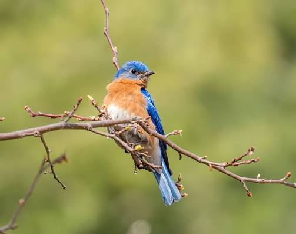

My favorite bird is the blue and orange bird. It is a beautiful bird with vibrant colors that make it stand out in nature. The combination of blue and orange feathers creates a striking contrast that is pleasing to the eye. This bird is often found in tropical regions and is known for its melodious songs. Observing this bird in its natural habitat can be a delightful experience for bird enthusiasts and nature lovers alike.
